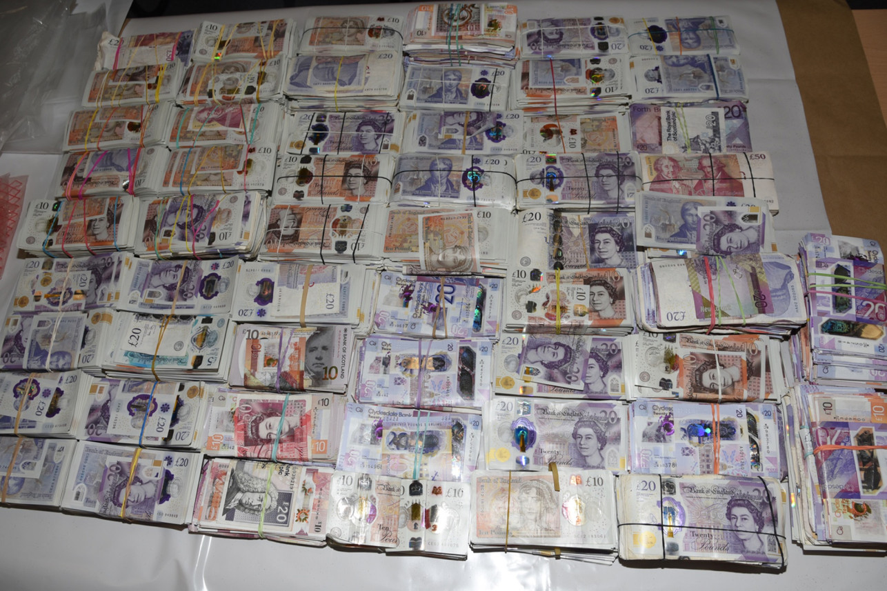
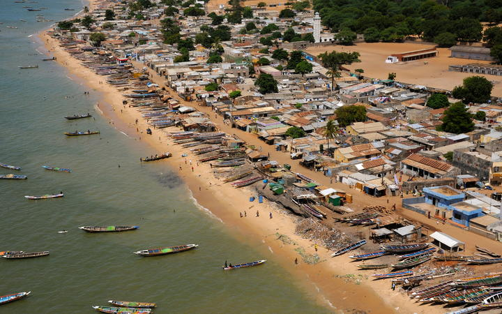

Dalka yar ee la yiraahdo Eritrea ayaa waxa uu ka tirsanaay dal weynaha Ethiopia,waxaane xukumi jiray dawladihii isaga dambeeyey taladda dalka Ethiopia ka hor inta aanuu gooni isu taagin. Dalka Eritrea ayaa waxaa taladiisa qabtay kaligiis taliye caan ka ah wadamadda Afrikada Bari lana yiraahdo Isaias Afwerki kasoo xukunka qabsadauy sannadkii 1991-dii waxaane loo yaqaanaa “ KALIGIGII TALIYIHII SHAYDAANKA AHAAY”. Madaxweynaha Eritrea Afwerki ayaa dagaalo waxa uu la kala galay wadamadda Ethiopia iyo Yaman dagaalka ugu xumaa ayaa waxa uu dhexmaray Ethiopia iyo Eritrea sannadkii 1998-2000,waxaane la sheegaa in dagaalkaas eey ku dhinteen dad gaaraayo inta u dhexeeyso 70-kun ilaa 120-kun qofood,waxa uu dagaal dhinaca badda ah la galay dalka Yaman sannadkii 1995-tii waxa uuna dagaalka ka dhacay jaziradaha Xuneesh ee dalka Yaman kuna yaala badda Cas,dhinaca kale dalka Eritrea waxa uu taageero aad xoog badan u fidiyey maxkamadihii islaamiga ahaay ee ka talinaayey Muqdisho sannadkii 2006-dii sababta eey Eritrea u taageertay maxaakimta islmaaiga ah ayaa ahayd dagaal kala dhexeeyey dalka Ethiopia,hadaba waxa jiro maqaal ku soo baxay wargayska “ NATIONAL INTEREST “ oo si fiican uga hadlaayo madaxweynaha Eritrea inuu yahay kaligii taliye shaydaan ah iyo doorka uu ku leeyahay siyaasadaha ka jiro gobolka gaar ahaan soomaaliya iyo ethiopia,Afawerki ayuu wagaysku ku tilmaamaa inuu yahay shaqsi dalkiisa ku xumaayey ciqaab loo gaysto dadka dalka u dhashay lana geliyo dagaal iyo inuu hadda qeyb ka yahay dagaalka sokeeye ee ka socdo dalka Ethiopia ee u dhexeeyo ciidamadda dawladda federaalka Ethiopia iyo kuwa tigreega. XIGASHO NATIONAL INTEREST.
Suuragal Matahay?
Dilka ayaa ah mid lagu beegay xuskii weeraradii lagu qaaday safaaradaha Maraykanku ku leeyahay Nayrobi ee dalka Kenya iyo Daara salaam ee dalka Tanzaniya sannadkii 1998-dii,weerarkaas ayaa waxaa ku dhintay dad gaaraayo 224-qofood waxaane ku dhaawacmay dad gaaraayo 4000-qofood. Xukuumadda washington ayaa waxa eey abu Maxamed Al Masri ku tuhmaysaa inuu door fiican ku lahaay weerarkaas lagu qaaday labada safaaradood ee Maraykanka. Weerarka lagu dilay Abu Maxamed Al Masri ayaa waxaa fuliyey sirdoon israa’iil ah sida uu qoray wargayska New York Times cadadkiisii soo baxay 13/11/2020-ka,wargayska ayaa intaas raaciyey in geberta uu dhalay Abu Maxamed Al Masri ee isaga lala dilay eey ahayd xaaska mid ka mida caruurtii uu dhalay hogaamiyihii alqaacidda Usama Bin laadin sida eey sheegeen sirdoonka maraykanka balse waxaa hadalkaas beeniyey wax kama jiraane ka soo qaaday dalka Iraan oo ah halka eey wax ka dheceen.

Laba Qofood oo Dhalaty Czech oo
Labada qofood ee la qabtay ayaa kala ah nin 37-jir ah iyo haweeneey 26-jir ah waxaane joojiyey masuuliyiinta garoonka diyaaradaha ee Heathraw ee magaaladda London saaacadu markeey ahayd 9:00-GMT bisha Nofembarne ahayd 8/11/2020-ka,lacagtaan cadaanka ah eey wateen labadaan qofood oo laga kala helay boorsooyinkooda safarka iyo laba boorso gacmeed eey wateen. Dhacdadaan waa tii labaad ee ka dhacda dalka Ingiriiska muddo ka yar laba bilood oo waxaa bishii oktoobar ee sannadkaan 2020-ka la qabtay haweeneey u safraysay magaaladda Dubai ee dalka Imaaraatka Carabta,haweenaydaas ayaa wadatay lacag cadiin(Cash) ah tiradeedana lagu sheegay ineey dhammeed (1.9)milyan oo Giniga Istarliinka ah una dhiganta (2.5)milyan oo doolarka Maraykanka ah.
140-Muhaajir oo Doon Kula Degtay Dalka Senigal

Ugu yaraan 140-muhaajir una socday qaaradda yurub ayaa ku haftay xeebaha dalka Senigaal sida eey sheegtay Qaramadda Midoobay,dadkaan muhajiriinta ah doontii eyy la socdeen ayaa waxaa qabsaday dab ka dibne wxaa qalibantay doontii shilkaan ayaa ah kii ugu dhimashadda badnaa inta shil ee ka dhacda badaha inta la diiwaan geliyey sannadkaan 2020-ka waa sida laga soo xigtay qaramadda miodoobay. Doontaan dabaka qabsaday hadane gadoontay ayaa waxaa saarnaay muhaajiriin dhan laba boqol(200),waxayna doonta degtay markii eey ka soo dhaqaaqday magaaladda kalluumaysatada ee Mbour kuna taala koonfurta caasimada dalka Senigaal una jirta masaafa dhan 100km,dhacdadaan ayaa ahayd mid dhacday maalintii Sabida ahayd sida laga soo xigtay hayadda Muhaajiritiinta caalamaiga ah(IOM). XIGASHO RNZ.
Soomaaliya oo ka Mid noqotay 16-KA
Dagaalo,dhaqaale xumi,isbedelka hawada,cudurka Covid-19,ayaa sababay in dalalka Burkiino Faaso, Nayjeeriya,koonfurta suudaan iyo Yaman ineey soo food saarto gaajo iyo macluul aad u xun,xaaladda dalalkaan ayaa ah mid ka sii dari doonto bilaha soo socdo sida eey sheegtay hayadda cuntadda adduunka ee marka la soo gaabiyo magaceeda loo yaqaano WFP.
Sida eey sheegtay warbixinta cusub eey sida wadajirka ah u soo wada saareen Hayadda Beeraha(FAO) iyo Hayadda cuntadda adduunka(WFP) ayey ka digeen in afartaas dal ee la sheegay eey wajihi doonaan cunti xumi aad ba’an haddii aan lala soo gaarin kaalmom deg deg ah.XIGASHO ANADOLU.
Suudaaniyiin La Khiyaanya
Boqolaal rag ah una dhashay dalka Suudaan ayaa la soo sheegay inuu shaqaaleeyey Imaaraat Carabta si eey u sugaan amniga waardiyana uga qabtaan gudaha dalka Imaaraatka Carabta,waa la khiyaanay suudaaniyiinta oo waxaa loo qaaday dalka Liibiya si eey halkaas uga dagaalamaan sida lagu sheegay baaritaan eey sameeysay hayadda xuquuql insaanka ee loo yaqaano Human Rights Watch.
Ragaan Suudaaniyiinta ah ee la khiyaanay ayaa tiradooda lagu sheegay ineey dhan tahay 390-qofood oo rag wada ah,intooda badan ragaan ayaa ka yimid caasimadda dalka Suudaan ee Khartuum,ragaan la khiyaanay ayaa waxaa shaqaaleysay shirkad ka dhisan dalka Imaaraatka Carabta shaqada eey qabataana eey tahay hawlaha amaanka waxaa shirkadaas la dhahaa BLACK SHIELD SECURITY SERVICE,ujeedada loo shaqaaleeyey ragaan Suudaaniyiinta ah ayaa ahayd ineey ilaaliyaan dhismayaasha eey ku yaaliin goobaha laga suuqeysto iyo Huteeladda ee ku yaalo gudaha dalka Imaaraatka Carabta,dhinaca tababarka,ragaan waxaa la siiyey tababar qaatay laba bilood ka dibne waxaa loo qaaday dalka Liibiya si eey uga dhinaca dagaalamaan dagaal oogaha eey taageerto Imaaraatka Carabta ee la yiraahdo Gen.Khaliifa Xaftar. XIGASHO THE INDEPENDENT.
Dagaalka Itoobiya oo Sii Kordhay
Sida uu qoray wargayska caalamiga ah ee New York Times Itoobiya waxa eey u muuqataa mid danaynaysa ineey gasho dagaal sokeeye ka dib markii eey ciidamadeeda talaabo cadawnimo ku qaadeen halka eey ka taliso kooxda awooda badan ee degta waqooyiga itoobiya ee tigray,waxaane dalka daafihiisa laga kala keenay ciidamo balse hogaamiye Abiy Axmed ayaa ah mid iska indha tiraayo codsiyadda caalamiga ah ee faraayo inuu ka joogo dagaalka uu ku qaadaayo gobolka eey degaan qoowmiyadda Tigray.
“ Dalkaynu waxa uu galay dagaal aan la filayn” Sidaas waxaa yiri taliye ku xigeenka ciidamadda Itoobiya Gen.Birhanu Jula. Taliyaha ayaa intaa raaciyey “ Dagaalkaan waa mid ceeb ah maalaa yacnina ah”, lama oga ilaa hadda xaalka halku uu maraayo waxaane dhacday in maalintii shalay ahayd gobolka Tigrayda degto laga wada jaray dhammaan isgaarsiinta taasoo loo macneeyey in xukuumadda Itoobiya rabto in indhaha caalamka ka qariso waxa ka dhacaayo goblka waqooyi ee dalka Itoobiya. XIGASHO NEW YORK TIMES.